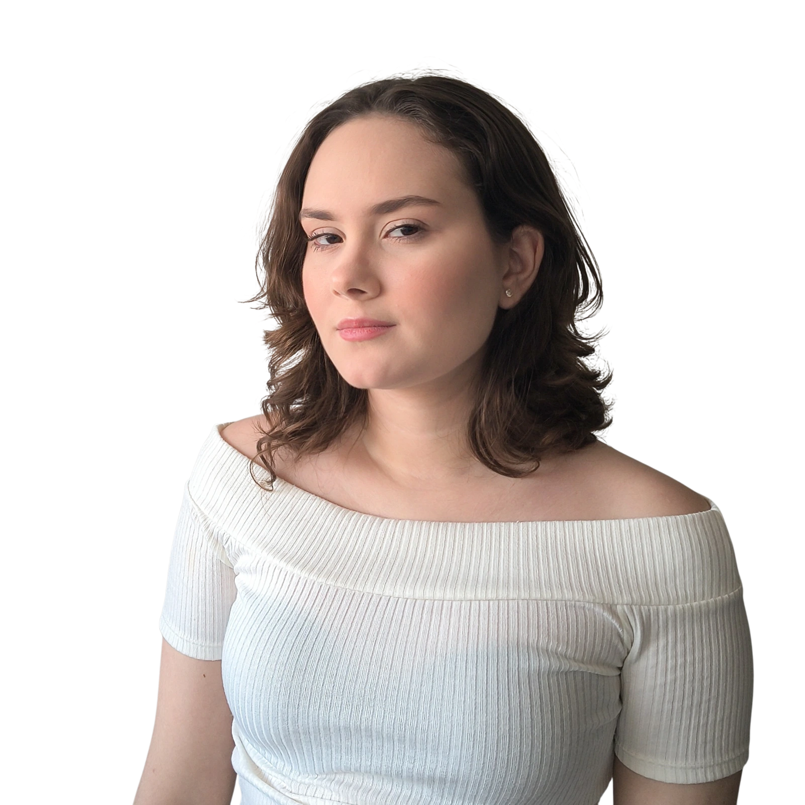
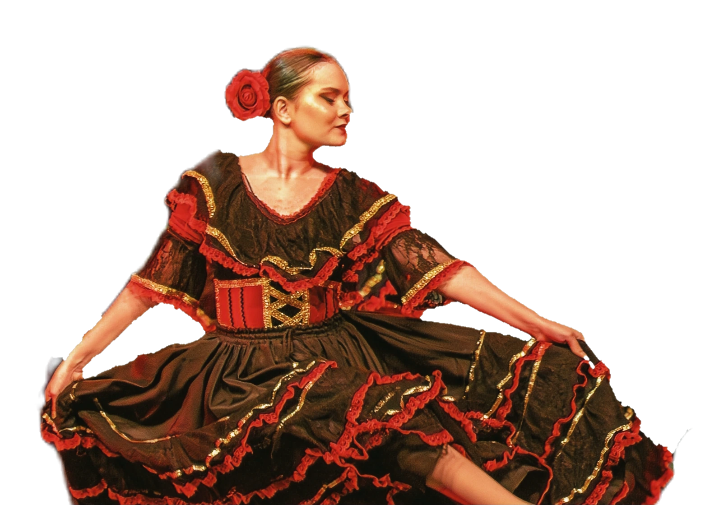

DIFFERENT
PEOPLE.
SAME HUMANITY.
About
A Brazilian-Uruguayan actress drawn to complex characters, meaningful stories and new perspectives.

Bio
Bibiana Riet is a Brazilian-Uruguayan actress based in Brazil, with experience in theatre, dance and physical performance. Her stage work spans drama, comedy and movement-based performance.
Her background in psychology has shaped her curiosity about human behavior and her interest in layered, emotionally complex characters. She is particularly drawn to stories that explore vulnerability, resilience, identity and transformation.
Alongside acting, Bibiana has experience in adaptation writing and continues to develop her work for camera while building toward opportunities in Brazil and internationally.
View resume →ARTISTIC APPROACH
Characters who live
in the in-between.
I’m interested in the tension between vulnerability and strength, and in the ways different worlds, cultures and perspectives shape a person. Acting, for me, is a way to explore human experience through curiosity, imagination and connection.
MOVEMENT & PRESENCE
Movement as a
language
Dance and physical performance are part of my artistic vocabulary, offering another way to explore character, emotion and storytelling.
BALLET · CONTEMPORARY · PHYSICAL PERFORMANCE
Watch movement reel →